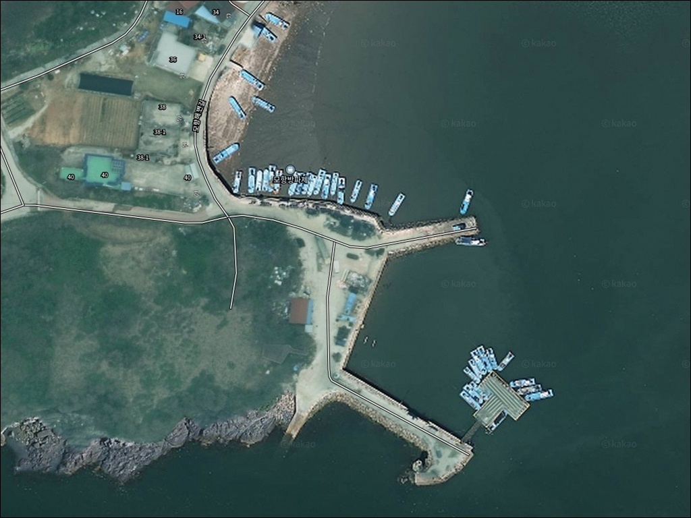
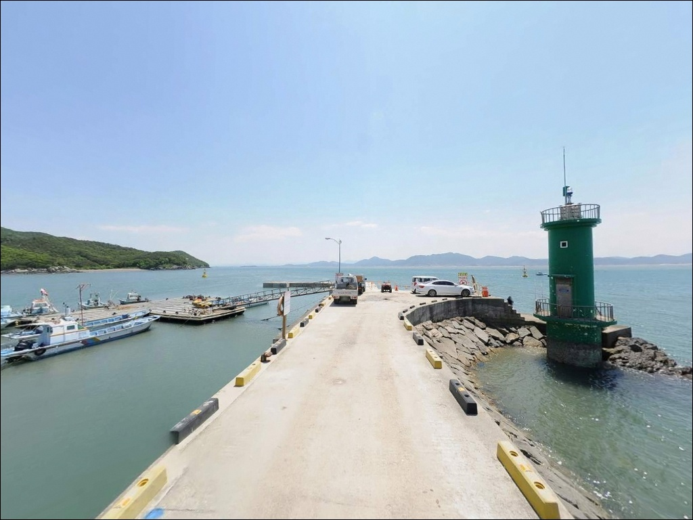
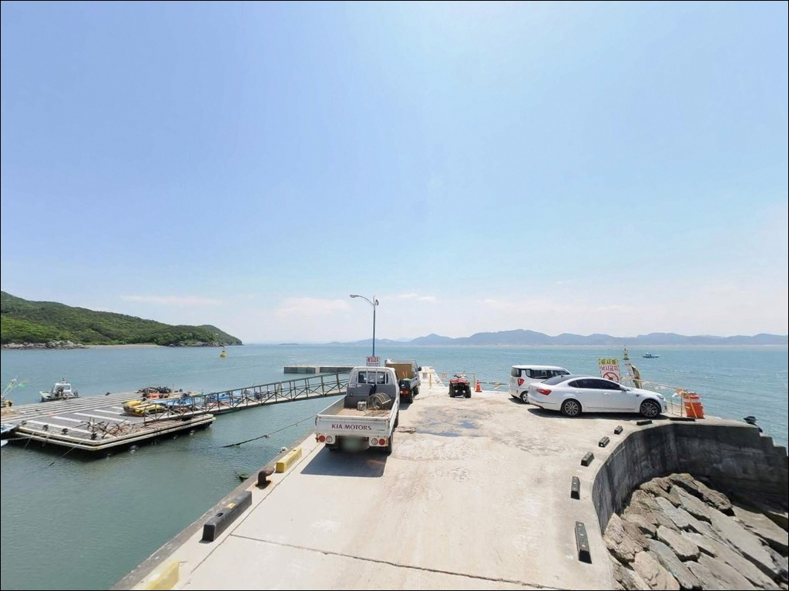
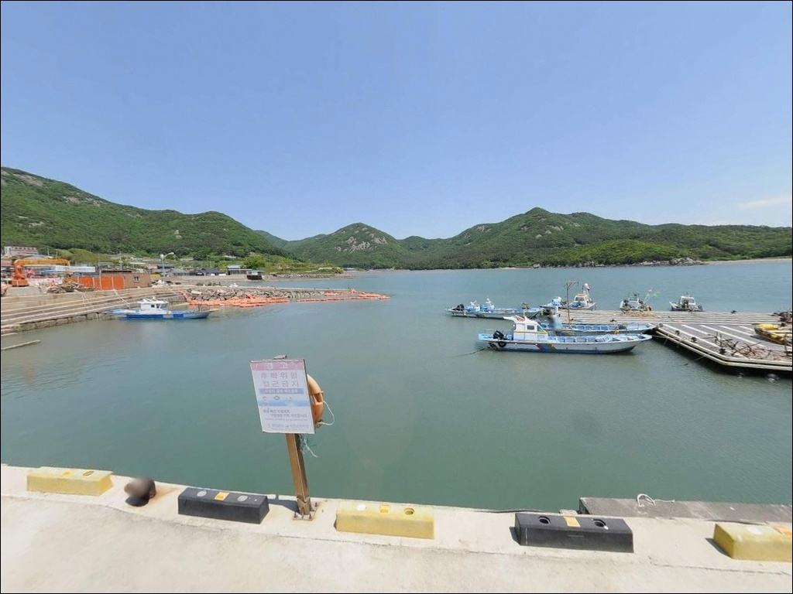
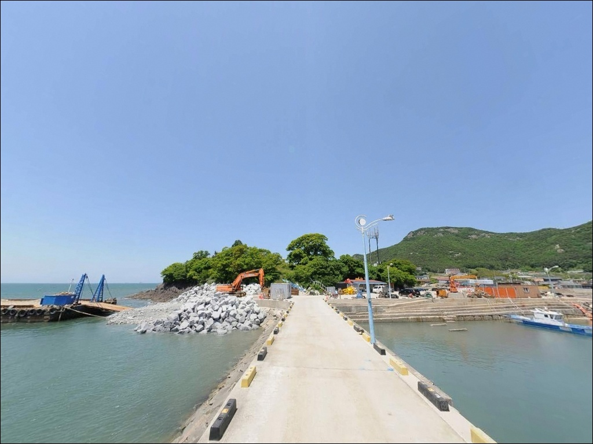
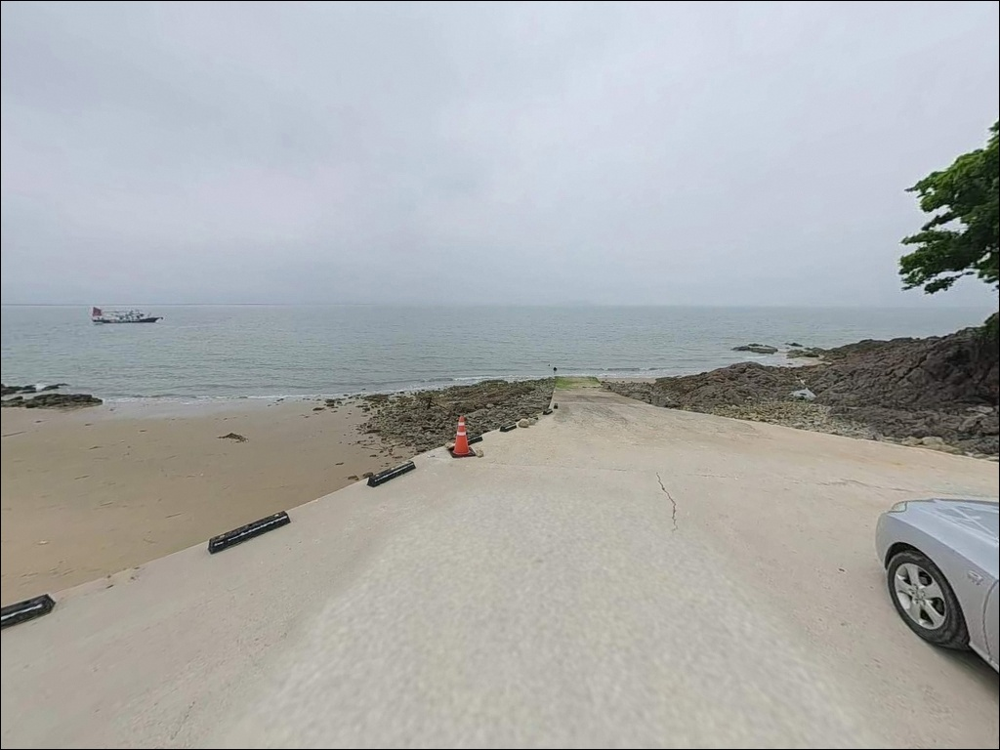
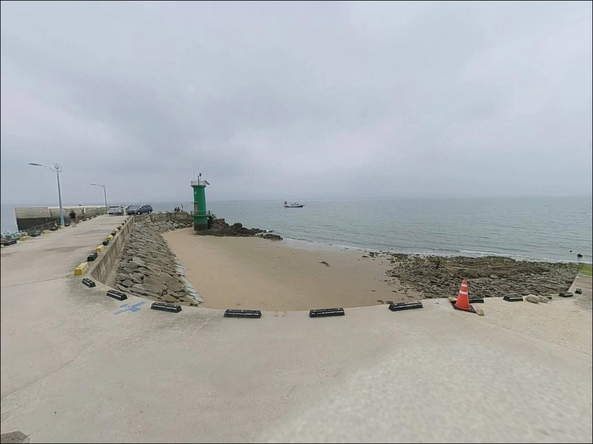
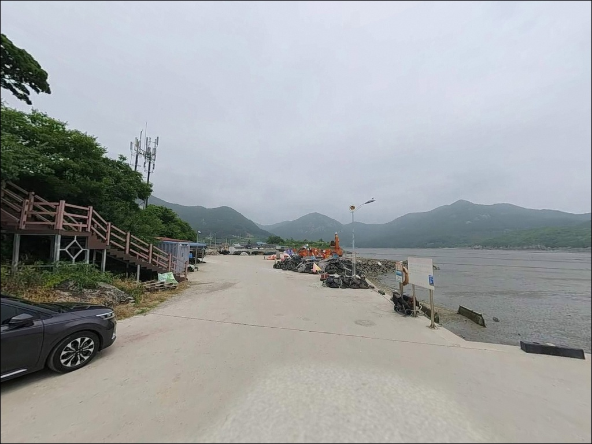
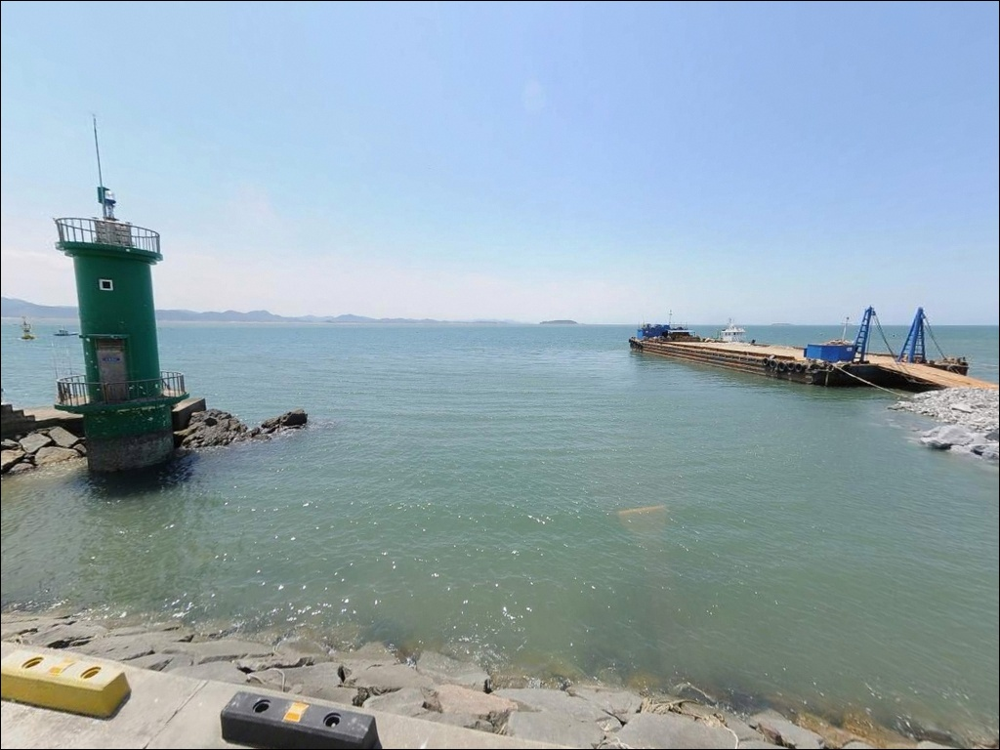

이 페이지에는 광고(제휴 링크 포함)가 있으며, 광고 링크를 통해 구매하면 운영자가 판매 수익 또는 수수료를 받을 수 있습니다. 포인트 사진: 카카오맵 스카이뷰·로드뷰. 이 페이지의 지도·사진 이미지는 카카오맵의 실제 서비스 이미지와 다를 수 있습니다.


모항방파제, 전북 부안군 잔잔한 물결과 어울리는 차박, 낚시 한적한 포인트
포인트 안내
모항방파제
전북 부안군 변산면 도청리 55
물때 확인 없이 모항방파제를 찾으면
간조 때 방파제 주변 수심이 얕아져
원투 채비가 바닥에 끌리고
루어 운용 자체가 어려워집니다.
서해 특성상 조수간만의 차가 크고,
물때 타이밍이 낚시 성패의 전제 조건인
포인트입니다.
전북 부안군 변산면 도청리,
모항해수욕장 바로 옆에 자리한 모항방파제는
변산반도국립공원 안에 위치한
어촌정주어항 방파제입니다.
외항 테트라포드와 내항 석축이 함께 있어
원투낚시부터 루어낚시, 찌낚시까지
복수 낚시 스타일 대응이 가능한 구조입니다.
이 글은 모항방파제의 진입 환경,
지형 구조, 낚시 방식별 적합성,
차박 체류 조건에 집중합니다.
특정 어종 조황 단정이나
시설 운영 확정 정보는
이 글의 범위에 포함되지 않습니다.

1. 진입 동선과 포인트 접근성
모항방파제까지는 왕복 2차선 도로가
항구까지 이어져 있어
차량 진입에 큰 어려움은 없습니다.
모항해수욕장이 관광지로 지정된 곳이어서
해안 진입로는 포장 상태가 양호한 편이며,
승용차 기준 접근성이 나쁘지 않은 구조입니다.
방파제 입구까지 차량 진입과 회차가
가능한 구조이나, 선착장 어선 정박 구역 인근은
어민 작업 동선이 겹칠 수 있어
주차 자리 선택 시 주의가 필요합니다.
모항해수욕장 구역 내에
공식 주차장이 조성되어 있어
이를 기준으로 동선을 잡는 편이 안전합니다.
방파제 끝단 방향은 차량 진입보다
도보 이동이 기본입니다.
끝단 회차는 어려운 구조이므로
대형 차량이라면 방파제 입구 주변에서
먼저 주차 여건을 확인한 뒤 진입하는 것이
불필요한 상황을 피하는 방법입니다.

2. 차박 환경과 야간 체류 여건
모항해수욕장 바로 인접 구역에
해변 바로 앞 무료 야영장이 조성되어 있습니다.
변산반도국립공원 내에 위치한 공식 시설로,
낚시 후 하룻밤 머무는 차박 베이스로
활용하려면 이 공식 야영장을 이용하는 것이
국립공원 내 취사·야영 원칙에 맞는 방법입니다.
지정된 야영장 외 임의 취사·야영은
원칙적으로 허용되지 않습니다.
모항 일대는 펜션·민박이 있는 관광지 성격이라
완전히 고립된 분위기는 아닙니다.
야간에 방파제 끝단이나 외항 쪽은
조명이 충분하지 않을 수 있어
개인 헤드랜턴은 반드시 챙겨야 합니다.
외해 방향으로 개방된 구조여서
북서풍 계열 바람이 강한 날은
외항 쪽 야간 체류에 주의가 필요합니다.


3. 주변 편의시설 및 인프라 현황
모항방파제 인근은 관광지와 어촌이 혼재한
지역으로, 편의점이 차량 기준 2분 내외 거리에
있는 편입니다.
모항항 내에 공중화장실이 있으며,
해수욕장 관리사무소와 음수대도
모항해수욕장 구역 내에 조성되어 있습니다.
기본 인프라는 이 권역 내에서 해결 가능한 수준입니다.
낚시 채비나 미끼 등 전문 낚시 소품은
반경 3km 이내에서 확인된 낚시점 정보가 없어
사전 준비가 필요합니다.
격포항 방면(약 6.5km 북쪽)에
낚시점이 있어 채비 조달은
격포 방면을 이용하는 것이 현실적입니다.
응급 상황 발생 시 변산보건지소가
반경 10km 내에 있습니다.
비상약품과 식수는 출발 전에 갖추고,
연료도 진입 전에 충분히 채워두는 편이
기본 준비입니다.

4. 진입 전 반드시 챙겨야 할 준비사항
모항방파제에서 낚시를 계획한다면
출발 전 가장 먼저 확인해야 할 것이 물때입니다.
서해는 조수간만의 차가 크고
모항 일대는 간조 시 수심이 크게 낮아지는 구간이
생기는 구조입니다.
바다타임에서 부안 또는 변산면 기준 물때를
확인하고 만조 전후 타이밍을 기준으로
출발 시각을 맞추는 것이 기본 전략입니다.
외항 테트라포드 구간은 바닥이 돌·여밭 지형으로
밑걸림이 잦은 편입니다.
채비 손실에 대비해 여분 채비를
넉넉하게 준비하고 가는 것이 좋습니다.
테트라포드 위는 미끄러짐 사고 위험이 있어
구명조끼와 미끄럼 방지 신발은 필수입니다.
기상 예보도 출발 당일 아침 다시 확인하는 것이
좋습니다. 외해 방향으로 개방된 구조여서
북서풍이 강해지면 외항 쪽은
파도 영향을 직접 받는 구조입니다.
강풍 예보가 있을 때는 외항 접근을
자제하는 것이 안전합니다.

5. 지형 기반 낚시 여건 분석
모항방파제는 외항 쪽에 테트라포드가 배치되어 있고
내항 쪽은 석축 구조입니다.
방파제 끝단으로 갈수록 수심이 깊어지는 구조여서
끝단 쪽이 낚시 자리로 선호되는 구간입니다.
사리 물때에는 외항 방면 조류 소통이
원활해져 회유성 어종의 유입 기대가 높아지는
타이밍이기도 합니다.
바닥은 돌과 여밭이 혼재된 지형으로,
방파제 가까운 쪽은 밑걸림이 있는 편입니다.
채비를 멀리 보낼수록 바닥 상황이
다소 나아지는 경향이 있어
장타 원투 방식이 이 포인트 지형과
잘 맞는 이유입니다.
모항방파제는 서해 조수간만 차가 큰 해역에 위치해 있어,
물때 확인이 낚시 자리 확보의 전제 조건입니다.
해변 일대 갯바위 구간도
낚시 가능 지형으로 확인되는 곳입니다.
방파제 외에 갯바위 쪽에서 찌낚시나
루어 탐색을 함께 시도해볼 수 있는 구조이나,
파도 상황에 따라 갯바위 진입 여부를
현장에서 판단해야 합니다.
출조 전 모항방파제 최신 조황은
꼭 검색해 보시기 바랍니다.


6. 조류 흐름이 달라지면 낚시 방식도 달라지는 이유
원투낚시는 모항방파제 지형 구조에
가장 잘 맞는 방식입니다.
방파제 외항 끝단 방향으로 채비를 멀리 보내
수심 변화 구간을 탐색하는 접근이 유효합니다.
만조 전후 조류가 살아 있는 타이밍에
봉돌을 바닥에 고정하고 입질을 기다리는
방식이 이 포인트의 기본입니다.
찌낚시는 내항 석축 구간이나
방파제 중간 지점에서 상층 회유 어종을
노리기 좋은 방식입니다.
숭어나 학공치를 기대해볼 수 있는 자리로,
파도 영향이 적은 만조 전후 잔잔한 내항 쪽에서
고부력 찌를 활용해 조류 흐름을 타는
방식이 어울립니다.
루어낚시는 외항 테트라포드 주변을
탐색하는 방식으로 접근합니다.
바닥 여밭 지형을 감안하면
바닥층보다 중층~표층을 탐색하는
채비 선택이 밑걸림 손실을 줄이는 방법입니다.
외항 테트라포드 구간은 여밭 성격의 바닥 지형으로
밑걸림이 잦아, 채비 여분 준비가 필수입니다.

7. 대안 포인트와 플랜 B 동선
모항방파제에서 조류가 너무 세거나
자리가 여의치 않을 때 첫 번째로 이동할
대안 포인트는 격포항 방파제입니다.
모항에서 북쪽으로 약 6.5km 거리이며,
북방파제 610m, 남방파제 380m 규모의
서해 대표 낚시 거점입니다.
낚시점과 횟집이 인근에 밀집해 있어
채비 조달과 식사 모두 해결 가능한 구조입니다.
변산반도 해안선을 따라 남쪽으로 이동하면
왕포항과 곰소항도 대안 포인트가 됩니다.
왕포항은 소규모 정주어항으로
방파제·선착장 시설이 있고
다양한 서해 어종을 기대해볼 수 있는 구조이며,
곰소항은 회센터가 인접해 있어
낚시 후 식사를 함께 계획하기 좋은
이동 동선입니다.
모항방파제 조황이 부진한 날이라면
격포항을 중심으로 잡고
왕포항·곰소항을 함께 탐색하는
변산반도 해안 루트가 이 일대에서
가장 효율적인 이동 동선입니다.

물때를 알고 가면
모항방파제가 달라 보입니다
원투낚시나 찌낚시를 즐기는 낚시인이라면
모항방파제의 지형 구조는
충분히 잘 맞는 편입니다.
외항 테트라포드와 내항 석축이 공존해
상황에 따라 자리를 바꾸며
복수 방식 대응이 가능한 포인트입니다.
반면 물때 계산 없이 간조 시간대에 도착하거나,
여밭 지형에 대한 채비 준비 없이 진입하면
밑걸림 손실과 낮은 수심 문제를
연달아 맞닥뜨릴 수 있습니다.
물때 확인, 여분 채비, 구명조끼,
이 세 가지를 갖추고 들어가면
변산반도 해안선의 묵직한 포인트를
제대로 경험할 수 있는 곳입니다.
모항해수욕장 공식 야영장에서 하룻밤 머물며
여명 물때를 맞춰 방파제에 자리를 잡는 일정이라면,
낚시와 차박을 동시에 즐기는
서해 변산반도 출조의 출발점이 될 수 있는 곳입니다.